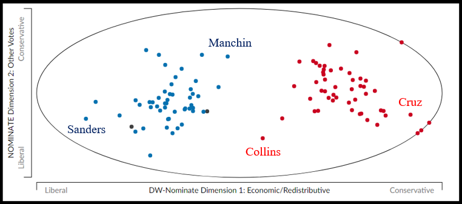
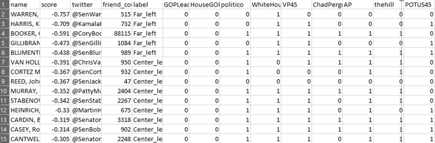
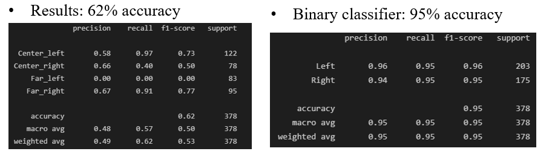

Chris Orlassino
A computer engineer passionate in machine learning, game development, and problem solving.
Predicting Partisanship from Twitter
- A Python-based project which attempts to classify a congressperson's political ideology based on features extracted from Twitter
- This project was completed solely by Chris Orlassino in two months
- The project report is linked here: project report
- Briefly, there are four labels for classification: far left, center left, center right, far right
- These quadrants are derived by analyzing DW-NOMINATE, which is a generally-accepted metric of partisanship used by political scientists: 
- The Python libraries Scrapy and Selenium were used to scrape a list of each congressperson and their Twitter account
- The Twitter dev API was used to extract features from their Twitter accounts
- The first feature set relies on the users which the congressperson follows: the 50 most common overall are the feature set: 
- A Bernoulli naive Bayes classifier rendered a 65% accuracy, and 93% accuracy when only classifying left/right
- The second feature set relies on sentiment analysis of certain keywords
- Due to API limits, only two keywords could be observed. They were chosen to be "Trump" and "Biden":
- A multinomial naive Bayes classifier rendered a 62% accuracy, and 95% accuracy when only classifying left/right 
- 62% is good accuracy for only having two features; good proof of concept
- With higher API access, more keywords could be analyzed to split homogenous clusters as shown above